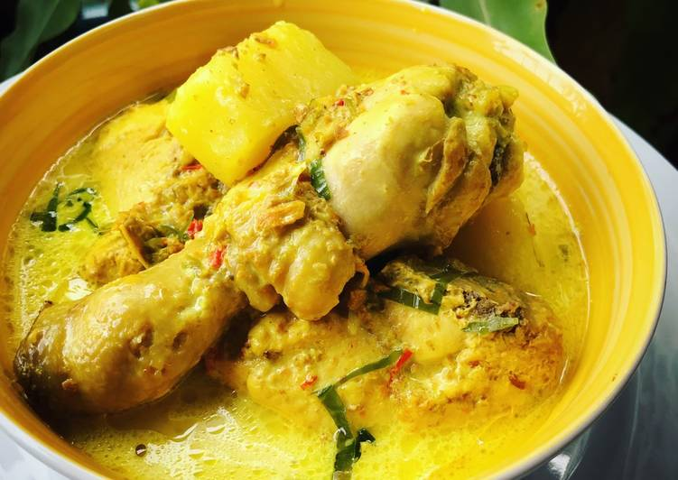

Ayam Masak Lemak Cili Api

Description
This dish is creamy and packs quite the muted punch! Loosely translated as creamy chicken with birds' eye chilli, the coconut milk used easily overpowers the overbearing heat the amount of birds' eye chillies would have otherwise given.
This is a ridiculously easy yet authentic Malay dish with ingredients mostly readily available in many Asian stores. It has been altered a little to account for less-available ingredients when cooking overseas, and I feel the oregano gives it another layer of richness, but does not take away the authenticity of the dish.
Ingredients
- 1kg chicken, cut into edible pieces. I prefer thighs/drumsticks exclusively with skin on
- 500 ml coconut milk
- 4 medium-sized potatoes, quartered
- turmeric powder
- salt to taste
- 1 tbsp lime juice, substituting the preferred but less available asam keping (tamarind slices)
- 1tsp oregano powder
- msg to taste (highly recommended)
- 1 turmeric leaf, cut into thin strips (optional)
- water
Ground ingredients
- 10-20 birds' eye chillies (depending on how hot you like it)
- 2 inches fresh turmeric
- 2 sticks lemongrass
Steps
- Prep: Marinade chicken in some salt and turmeric powder for half an hour or more. Cook some white rice so it is ready to serve with the dish.
- Toss the 'Ground ingredients' into a blender with some coconut milk and water and blend until rather fine (but still visible). This is the easy method; traditionally, these are ground with a mortar and pestle so that they retain some of their texture.
- Place chicken into a pot on low to medium heat. Stir unti the skin is somewhat cooked.
- Toss in the ground ingredients and mix well with the chicken. Increase heat, then add half of the coconut milk with some water - enough to cover the chicken.
- Add the potatoes. Bring to a boil- this will take some minutes. Once boiled, add the rest of the coconut milk.
- Let simmer, stirring often, until potatoes are tender and chicken cooked through. Add turmeric leaf slices and lime juice.
- Add salt, oregano powder, msg and pepper to taste.
- Serve hot over white rice.